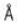
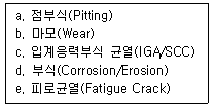

와전류비파괴검사기사(구) (2009-05-10 기출문제)
1과목: 와전류탐상시험원리
1. 100khz에서 20Ω의 저항을 갖는 100μH 코일의 임피던스는 얼마인가?
- 0.5Ω
- 20Ω
- 51Ω
- 66Ω
(정답률: 알수없음)

2. 다음 주파수 와전류 탐상 시험에 대한 설명으로 가장 옳은 것은?
- 주파수를 바꿔 가면서 시험체를 여러번 검사하는 방법이다.
- 시험 코일에 2개 이상의 시험주파수를 동시에 가하여 검사하는 방법이다.
- 여러 개의 코일에 각각 다른 주파수를 사용하요 검사하는 방법이다.
- 시험체의 성질에 따라 각각 다른 주파수를 사용하여 검사하는 방법이다.
(정답률: 알수없음)
3. 다음 중 와전류 탐상 시험의 표준 침투 깊이에 대한 설명으로 틀린 것은?
- 주파수의 제곱근에 반비례한다.
- 전도율의 제곱근에 반비례한다.
- 투자율의 제곱근에 반비례한다.
- 전류밀도의 제곱근에 반비례한다.
(정답률: 알수없음)
4. 관통 코일을 이요한 바자성체의 와전류 탐상 시험에서 검사속도가 빠를수록 기록계에 나타나는 결함신호의 진폭이 작아지는 이유는?
- 응답성 이하의 낮은 주파수 성분을 갖는 결함 신호가 입력되기 때문에
- 응답성 이상의 높은 주파수 성분을 갖는 결함 신호가 입력되기 때문에
- 이송장치의 빠른 이동으로 잡음 제거능력이 저학되기 때문에
- 의산신호와 결함신호가 혼합되어 분별능력이 저하되기 때문에
(정답률: 알수없음)
5. 다음 중 와전류 탐상으로 발견할 수 없는 것은?
- 관의 외경변화
- 관 표면에 존재하는 균열
- 봉재의 표면에 존재하는 겹침
- 지름 20cm 강봉 중앙에 존재하는 작은 기공
(정답률: 알수없음)
6. 어떤 재료의 특성 주파수가 150Hz이고, 의비가 10일 때 시험 주파수는 얼마인가?
- 0.06Hz
- 15Hz
- 1500Hz
- 15000Hz
(정답률: 알수없음)
7. 다음 중 0.03∼0.3cm 파장의 전자파를 이용하여 플라스틱 등의 결함을 검출하는 비파괴검사법은?
- 음향방출 시험
- 초음파탐상시험
- 마이크로파 시험
- 와전류 탐상시험
(정답률: 알수없음)
8. 압력 변화시험에서 압력변화를 주는 기간을 길게 할 때의 최대 장점은?
- 시스템의 누설율 저감
- 시험결과의 편차증대
- 측정된 누설율의 신뢰도 향상
- 시험 기체의 습기성분을 제거
(정답률: 알수없음)
9. 다음 중 방사선 투과 시험에 이용할 수 없는 방사선은?
- X선
- 알파선
- 감마선
- 중성자선
(정답률: 알수없음)
10. 다음 중 비파괴 검사의 종류에 해당되지 않는 것은?
- 적외선 분석시험
- 전기전도율 시험
- 충격측정 시험
- 암모니아 변색법
(정답률: 알수없음)
11. 다음 중 와전류 탐상시험의 설명으로 틀린 것은?
- 표면이나 표면 바로 밑의 결함 검출이 용이하다.
- 금속 단면 위에 도포되어있는 피막 두께측정이 가능하다.
- 철강재료의 투자율을 측정하여 재질검사가 가능하다.
- 내부 결함의 종류, 형상 등의 판별이 용이하다.
(정답률: 알수없음)
12. 다음 중 와전류 탐상시험으로 탐상하기 가장 어려운 것은?
- 관의 외경변화
- 관의 표면균열
- 후판 내부의 자동화 검사
- 봉의 랩(Lap) 및 심(Seam) 검출
(정답률: 알수없음)
13. 누설 검사법 중 기포 누설시험의 장점으로 볼 수 없는 것은?
- 비용이 저렴하며 안전한 시험이다.
- 온도, 습도, 바람 등에 별다른 영향을 받지 않는다.
- 지시의 관찰이 용이하고, 누설위치의 판별이 빠르다.
- 프로브(탕침)나 스니퍼(탐지기) 등이 필요하지 않다.
(정답률: 알수없음)
14. 다음 중 초음파 탐상 시험에 해당하지 않는 것은?
- 투과법
- 공진법
- 코일법
- 펄수 반사법
(정답률: 알수없음)
15. 다음 중 방사선 투과 시험의 장점을 옳게 설명한 것은?
- 방사선 투과시험은 다른 검사법에 비해 조작이 쉽고 간편하다.
- 방사선 조사방향과 관계없이 모든 결함을 검출할 수 있다.
- 방사선 투과시험은 양 면에 접근하지 않고 한 면에서 검사가 가능하다.
- 금속 및 비금속 재료의 시험에 적용가능하며 두께 차를 가지는 구상 결함의 검출이 가능하다.
(정답률: 알수없음)
16. 자로 (磁路)의 길이가 40cm인 중심 도체에 200회 코일을 감고 전류는 7A를 흐르게 했다. 이 때의 자화력은 몇 A/m인가?
- 700
- 1400
- 1750
- 3500
(정답률: 알수없음)
17. 다음 중 5500

을 nm로 환산한 것으로 옳은 것은?- 5.5nm
- 55nm
- 550nm
- 5500nm
(정답률: 알수없음)
18. 다음 중 형공침투 탐상시험보다 염색 침투탐상 시험의 장점으로 옳은 것은?
- 대형부품의 부분 검사에 적합하다.
- 소형, 다량부품의 검사에 효과적이다.
- 탐상 조작이 복잡하지 않으며 검출감도가 높다.
- 자외선 照射燈 으로 더 검출감도를 높일 수 있다.
(정답률: 알수없음)
19. 다음 중 단조과정에서 생기는 불연속은?
- 겹침
- 연마균열
- 피로균열
- 열처리 균열
(정답률: 알수없음)
20. 다음 중 두꺼운 철판 내부의 결함 측정에 적합한 비파괴 검사법의 조합으로 옳은 것은?
- 방사선 투과시험, 자분 탐상시험
- 초음파 탐상시험, 침투탐상시험
- 초음파 탐상시험, 와전류 탐상시험
- 방사선 투과 시험, 초음파 탐상 시험
(정답률: 알수없음)
2과목: 와전류탐상검사
21. 자기비교 방식의 관통 코일로 외경 150mm인 강관을 와전류 탐상한 결과의 특징으로 가장 옳은 것은?
- 축 방향의 긴 결함이 잘 검출
- 축 방향의 짧은 결함이 잘 검출
- 축 방향의 연속 결함이 잘 검출
- 시험체 투자율 변동으로 인한 잡음 감소
(정답률: 알수없음)
22. 다음 중 금속 봉을 빠르게 와전류 탐상 검사할 때 가장 적합한 프로브는?
- 내삽형 프로브(Bobbin Probe)
- 관통형 프로브(Encircling Probe)
- 표면형 프로브(Surface Probe)
- 팬 케익 프로브(Pancake Probe)
(정답률: 알수없음)
23. 다음 중 RFEC(Remote Field Eddy Current)에 대한 설명으로 틀린 것은?
- 강자성체 관의 가동 중 검사에 많이 이용된다.
- 전통적인 와전류 탐상 검사와 같이 전도체에만 적용 가능하다.
- 비자성체 적용시 대부분 와전류 탐상검사에 비해 감도와 정확도가 떨어진다.
- 전통적인 와전류 탐상 검사에 비해 내, 외면 결함 분류가 용이하다.
(정답률: 알수없음)
24. 내삽형 프로브를 사용하여 튜브를 검사할 때 두께 치수의 완만한 변화를 감지하기게 가장 적합한 프로브는?
- 지기비교형 프로브
- 상호비교형 프로브
- Pancake 프로브
- Pencil 프로브
(정답률: 알수없음)
25. 다음 중 리프트 오프 효과의 원리를 이용한 와전류 탐상검사는?
- 투자성 시험
- 전도성 시험
- 불연속부 시험
- 두께시험
(정답률: 알수없음)
26. 유체의 전송을 위해 사용하고 있는 관에 대한 와전류 탐상검사 결과, 결함이 검출되면 후속조치로 적절하지 않은 것은?
- 사용을 중지한다.
- 결함부위를 보수하여 사용한다.
- 관통되지 않은 결함은 계속 사용한다.
- 성장속도가 빠른 균열 결함은 보수하고 조치 기준에 따라 평가한다.
(정답률: 알수없음)
27. 와전류 탐상 검사시 와류가 결함과 어떤 상태일 때 결함이 가장 잘 검출되는가?
- 결함이 가장 큰 쪽으로 수직일 때
- 결함이 가장 큰 쪽으로 수평일 때
- 결함이 가장 작은 쪽으로 수직일 때
- 결함이 가장 작은 쪽으로 수평일 때
(정답률: 알수없음)
28. 외경 27mm, 두께가 2.4mm인 비자성 관을 관통코일로 검사할 경우 코일의 내경이 29.5mm1, 외경이 32.5mm라면 충전율은 약 얼마인가?
- 0.71
- 0.76
- 0.81
- 0.84
(정답률: 알수없음)
29. 와전류 탐상 장치에 관한 다음 설명 중 틀린 것은?
- 관통형 코일은 선, 관, 환봉의 검사에 적합하다.
- 열교환기 관의 검사에는 주로 내삽형 코일이 사용된다.
- 도금이나 도막의 두께 측정에는 주로 표면형 코일이 사용된다.
- 열교환기에서 지지판에 의한 잡음제거에는 주로 복수형 코일이 사용된다.
(정답률: 알수없음)
30. 다음 중 충전율에 관한 설명으로 잘못된 것은?
- 표면 코일의 경우에 코일과 시험체의 거리를 일컫는 용어이다.
- 1에 가까울수록 좋은 결과를 얻을 수 있다.
- 0.6이상이면 바람직하다.
- 코일직경과 시험체 직경의 비를 제곱한 값이다.
(정답률: 알수없음)
31. 와전류 탐상 검사에서 시험 코일의 임피던스에 영향을 미치는 주된 인자와 가장 거리가 먼 것은?
- 시험속도
- 시험 주파수
- 시험체의 전기 전도도
- 코일의 자체 인덕턴스
(정답률: 알수없음)
32. 강자성체 재료에 대한 와전류 탐상검사에서 투자율 변화에 의하여 나타난 신호를 결함에 의한 신호와 구별하기 위한 방법으로 옳지 않은 것은?
- 자기포화 코일로써 자기포화하여 검사한다.
- 시험 주파수를 바꿔서 검사한다.
- 충전율(Fill-Factor)이 낮은 코일로 다시 검사하여 확인한다.
- 신호의 형성과 진폭을 자세히 관찰하고 신호 형성 속도를 비교한다.
(정답률: 알수없음)
33. 다음 배관에 발생한 결함 중 화학적 작용에 의한 결함의 종류로만 짝지어진 것은?

- a, b, c
- c, d, e
- a, c, d
- b, d, e
(정답률: 알수없음)
34. 와전류 탐상검사에서 알루미늄이나 티타늄 합금의 열처리 상태는 주로 무엇의 변화로 알 수 있는가?
- 투자율
- 전도율
- 투과율
- 비체적
(정답률: 알수없음)
35. 다음 중 와전류 탐상검사를 프로브()의 종류에 따라 분류할 때 적용방식에 의해 분류한 것은?
- 표면형
- 차동법
- 절대법
- 자기 비교형
(정답률: 알수없음)
36. 와전류 탐상검사에 의한 재질 시험 중 투자율 변화를 이용하여 알 수 있는 것은?
- 탄소함량
- 불연속 상태
- 열처리 상태
- 화학 조성 변화
(정답률: 알수없음)
37. 다음 회로도는 비자성 재료의 전도율 측정 장치를 나타낸 것이다. 측정 시 주의할 점으로 틀린 것은?
- 프로브 코일은 시험품의 평면부에 수직으로 해야 한다.
- 장치는 워밍업(Warming Up)하여 사용해야 한다.
- 시험품의 면적이 적거나 곡률이 있는 경우는 치구를 이용해야 한다.
- 시험품의 두께는 와전류 침투 깊이보다 충분히 얇아야 한다.
(정답률: 알수없음)
38. 와전류 탐성검사 장치 중 증폭기와 이상기의 출력을 비교해서 결함신호를 검출하는 것은?
- 브릿지 회로
- 선별기
- 밸런스 미터
- 동기 검파기
(정답률: 알수없음)
39. 표면형 코일을 모터의 벨트에 의해 회전시켜 환봉류의 검사에 사용되는 것으로 환봉의 결함 위치를 정확히 측정히기 위해 사용되는 와전류 탐상검사 코일은?
- Spining Coil
- Bobbine Coil
- Gap Coil
- 관통 코일
(정답률: 알수없음)
40. 프로브 코일을 사용한 와전류 탐상검사에서 시험체의 끝부분에서 나타나는 신호는 무엇에 의한 것인가?
- Lift-Off
- Edge Effect
- End Effect
- Fill Factor
(정답률: 알수없음)
3과목: 와전류탐상관련규격
41. 강관의 와류 탐상검사 방법(KS D 0251)에서 대비 시험편의 인공홈 중 드릴 구멍의 지름 크기로 틀린 것은?
- 1.0mm
- 1.2mm
- 1.4mm
- 2.5mm
(정답률: 알수없음)
42. 사용되는 대비 시험편의 인공 홈의 종류로 옳은 것은?
- 각진 홈
- 원형 홈
- 펀칭 구멍
- 사각 구멍
(정답률: 알수없음)
43. 강관의 와류 탐상검사 방법(KS D 0251)에서 용접 스텐레스강관을 탐상하기 위한 대비 시험편이 제작시 네모 홈 깊이의 최소값으로 옳은 것은?
- 0.1mm
- 0.2mm
- 0.3mm
- 0.5mm
(정답률: 알수없음)
44. 보일러 및 압력 용기에 대한 관 제품의 와전류 탐상 검사(ASME Sec. V Art.8.App. I)에 따라 고교정 관 시험편에 동일 원주상에 4개의 관통 벽두께 대비 20%의 외면 결함을 가공하고자 할 때 각 평저공의 직경은 몇 인치로 해야 하는가? (문제 오류로 인하여 보기가 복원중입니다. 정확한 보기 내용을 아시는분께서는 자유게시판이나 관리자 메일로 부탁 드립니다. 정답은 가번 입니다.)
- 복원중
- 복원중
- 복원중
- 복원중
(정답률: 알수없음)
45. 티타늄 관의 와류 탐상검사 방법(KS D 0074)에 따른 이음매 없는 티타늄 관의 탐상에 선택할 수 있는 최대 시험 주파수로 옳은 것은?
- 253KHz
- 512KHz
- 1024KHz
- 2048KHz
(정답률: 알수없음)
46. 다음 중 강관의 와류탐상 시험방법 (KS D 0251)에 규정된 대비 시험편의 네모 홈 호칭 방법이 아닌 것은?
- N-20
- N-25
- N-30
- N-35
(정답률: 알수없음)
47. 보일러 및 압력 용기에 대한 관제품의 와전류 탐상 (ASME Sec. V Art.8.App. I)에 따라 차동 코일법에 의한 기본 주파수 신호보정을 수행할 때 일반적으로 4개의 20% 평저공 신호의 8자형 궤적 순서를 옳게 나열한 것은?
- 원점 → 아래 왼쪽 → 위 오른쪽 → 원점
- 원점 → 위 왼쪽 → 아래 오른쪽 → 원점
- 원점 → 아래 오른쪽 → 위 왼쪽 → 원점
- 원점 → 위 오른쪽 → 아래 왼쪽 → 원점
(정답률: 알수없음)
48. 보일러 및 압력 용기에 대한 관 제품의 와전류 탐상 검사 (ASME Sec. V Art.8.App. I)에 따라 차동 보빈 코일(Absloute Bobbin Coil)을 이용한 기본 주파수 교정시 감도는 단위 눈금 당 1V로 설정된 오실로코프 감도를 이용하여 4개의 20% 평저공으로 부터의 최소 피크-피크 신호가 전수평 축의 몇 %가 되도록 조정되어야 하는가?
- 20%
- 30%
- 40%
- 50%
(정답률: 알수없음)
49. 동 및 동합금 관의 와류 탐상 시험방법(KS D 0251)에서 대비 시험편에 인공결함을 만들 때 드릴 구멍의 차수 허용차로 옳은 것은?
- ±0.01mm
- ±0.⑤mm
- ±0.10mm
- ±0.20mm
(정답률: 알수없음)
50. 다음 중 강관의 와류탐상 시험방법(KS D 0251)에서 검사결과의 기록에 반드시 포함되지 않아도 되는 것은?
- 탐상 주파수
- 검사 기술자
- 시험 코일의 길이
- 강관의 종류 기호 및 치수
(정답률: 알수없음)
51. 보일러 및 압력 용기에 대한 관 제품의 와전류 탐상 검사(ASME Sec. V Art.8.App. I)에서 비자성체 열교환기 관 검사를 하는 동안 허용되는 프로브의 공칭 속도는 1초당 최대 몇 인치를 초과하지 않아야 하는가?
- 4인치
- 8인치
- 14인치
- 30인치
(정답률: 알수없음)
52. 강의 와류 탐상 시험 방법 (KS D 0232)에 따른 시험의 적용 범위로 옳은 것은?
- 지름 및 관 바깥 지름이 모두 2∼180mm인 원형 봉강
- 지름 및 관 바깥 지름이 모두 4∼180mm인 원형 봉강
- 선재를 포함하여 지름이 모두 2∼100mm인 원형 봉강 및 바깥 지름이 모두 4∼180mm인 강관
- 선재를 포함하여 지름이 모두 4∼180mm인 원형 봉강 및 바깥 지름이 모두 2∼250mm인 강관
(정답률: 알수없음)
53. 강의 와류 탐상 시험 방법 (KS D 0232)에서 시험 장치에 대한 설명으로 틀린 것은?
- 시험 장치는 탐상기, 시험 코일, 기록장치, 이송장치 및 자기포화장치로 구성된다.
- 탐상기는 발진기, 전기장치 및 표시장치 등으로 구성된다.
- 탐상기의 사용 환경 온도는 0℃에서 4℃의 범위이며 ±15%의 전원, 전압의 변동에서 안정되게 작용하여야 한다.
- 시험 주파수는 10∼1024KHz의 범위이어야 한다.
(정답률: 알수없음)
54. 보일러 및 압력 용기에 대한 관 제품의 와전류 탐상검사 (ASME Sec. V Art.8.App. I)에서 대비 표준 시험편에 반지름 방향으로 100% 관통한 드릴 구멍 3개의 인공 불연속을 만드는 경우 이 드릴 구멍의 횡 방향 간격은 연속하여 몇 도 마다 일정한 간격으로 하여야 하는가?
- 30도 간격
- 60도 간격
- 90도 간격
- 120도 간격
(정답률: 알수없음)
55. 강관의 와류탐상 시험방법(KS D 0251)에서 비교 시험편의 인공 홈의 종류 및 줄 홈에 대한 설명으로 옳은 것은?
- 각도는 60°로 한다.
- 길이는 50mm이하 이다.
- 깊이의 허용차는 ±15%로 한다.
- 나비는 1⑤mm이하, 또는 홈 깊이의 3배 중 작은 쪽의 값이다.
(정답률: 알수없음)
56. 운영체체 역할로써 가장 거리가 먼 것은?
- 시스템의 효율적인 운영관리
- 하드웨어의 메로리 관리 및 압출력 보조
- 사용자의 하드웨어 간의 원활한 의사소통
- 원시프로그램을 목적 프로그램으로 변환
(정답률: 알수없음)
57. LAN의 토폴로지 구성 방식 중 중앙 스위치를 사용하여 망의 모든 요소를 연결하며, 중앙 스위치에서 회선 교환방법을 사용하여 통신하기 원하는 두 개의 스테이션에 전용회선을 만들어 주는 것은?
- 스타형
- 링형
- 버스형
- 타워형
(정답률: 알수없음)
58. 다음의 각 용어에 대한 설명 중 옳은 것은?
- 계정이라 인터넷에 연결되어 있는 컴퓨터를 지칭하는 용어이다.
- 게이트 웨이란 컴퓨터 상호간에 데이터를 주고 받기 위한 규칭 중 데이터를 전송하는 단위에 해당한다.
- Telnet 서비스는 컴퓨터의 원격 접속 서비스로 특정 지역의 사용자가 다른 곳에 위치한 컴퓨터를 온라인으로 연결하여 사용하는 기능을 제공한다.
- TCP/IP의 데이터 링크 계층은 상위 응용프로그램에 대해 두 호스트 간의 데이터 흐름을 제공하며 이때 사용되는 프로토콜이 TCP와 UDP이다.
(정답률: 알수없음)
59. 다른 시스템에 불법적으로 접근하여 피해를 입히는 행위를 무엇이라고 하는가?
- 해킹
- 조각모음
- 공유
- 백신
(정답률: 알수없음)
60. 온라인 대화(채팅)할 때의 올바른 넷티켓으로 옳지 않은 것은?
- 익명성을 이용하여 개인적인 논조를 내세운다.
- 대화방에 처음 들어가면 지금까지 진행된 대화의 내용과 분위기를 어느 정도 경청하는 것이 좋다.
- 유언비어, 속어, 욕설 등은 피하고 타인의 명예를 훼손하는 내용은 금한다.
- 마주보고 이야기하는 마음가짐으로 임한다.
(정답률: 알수없음)
4과목: 금속재료학
61. 비조질 고장력강을 만들기 위한 방법이 아닌 것은?
- 제어압연에 의한 강인화
- Nb, V, Ti 등의 첨가에 의한 결정립의 미세화
- 페라이트 미립화 처리와 탈질화물에 의한 석출 강화
- 미량 합금 첨가에 의한 방법 중 침입형 고용원소를 첨가하여 강화
(정답률: 알수없음)
62. 강에 포함되어 적열취성을 일으키는 것은?
- Cu
- S
- P
- H2
(정답률: 알수없음)
63. . Al의 질별 기호 중 T4처리에 대한 설명으로 옳은 것은?
- 용체화 처리한 것
- 용체화 처리 후 자연시효 시킨 것
- 용체화 처리 후 인공 시효강화 처리한 것
- 용체화 처리 후 냉간가공하고 다시 자연 시효시킨 것
(정답률: 알수없음)
64. 백주철을 1, 2단계의 풀림을 거쳐 Fe3C를 분해 시킴으로써 최종 페라이트아 흑연 조직으로 만든 주철을 무엇이라 하는가?
- 백심 가단주철
- 흑심 가단주철
- 펄라이트 가단주철
- 구상흑연 주철
(정답률: 알수없음)
65. 다음 중 펄라이트에 대한 설명 중 옳은 것은?
- 로 최대 4.3%C까지 탄소를 고용한 고용체이다.
- 페라이트와 시멘타이트를 층상조직이며 0.8%C를 함유한 것을 공석조직이라고도 한다.
- 강자성체이며 전-연성이 작고 순철에 가깝다.
- 668%C까지의 화합물로 존재하는 공정 조직이며 순철보다 전-연성이 좋다.
(정답률: 알수없음)
66. 다음 중 분말 야금법에 대한 설명으로 틀린 것은?
- 고융점의 재료를 제조할 수 있다.
- 재료의 균일성과 성분비 조절이 용이?.
- 금속 분말의 순도와 생산방법은 최종제품에 영향을 미치지 않는다.
- 용융법에서는 2개 이상의 금속 또는 비금속이 혼합되지 않는 조성에서도 혼합된 조성의 제품 제조가 가능하다.
(정답률: 알수없음)
67. 다음 중 켈멧(kelmat)의 주요 성분으로 옳은 것은?
- Co-Al
- Cu-Pb
- Mn-Au
- Fe-Si
(정답률: 알수없음)
68. Cu-쿠계 상태도에서 격자 상수가 증가하는 상의 결정은?
- 조밀 육방 격자
- 체심 입방 격자
- 사방 조밀 격자
- 면심 입방 격자
(정답률: 알수없음)
69. 실루민을 Na 혹은 NaF로 개량 처리하는 주 목적은?
- 공정점 부근에서의 Si 결정을 미세화 하기 위해
- 공석점 부근에서의 Si 결정을 미세화 하기 위해
- 공정점 부근에서의 Fe 결정을 미세화 하기 위해
- 공석점 부근에서의 Fe 결정을 미세화 하기 위해
(정답률: 알수없음)
70. 가공용 Mg합금으로 상태도 651℃부근에서 포정반응을 하며 용접성, 고온 성형성이 우수하고, 내식성도 비교적 양호한 합금계는?
- Mg-Mn계 합금
- Mg-Zn계 합금
- Mg-Zr계 합금
- Mg-회토류계 합금
(정답률: 알수없음)
71. 직경이 12.7mm인 탄소 봉상 시험편을 인장 시험기로 잡아 당겨 파괴하였을 때, 파괴 표면에서 시험편의 직격이 8.71mm이었다면 시험편의 단면 수축율은 약 몇 %인가?
- 31
- 53
- 63
- 83
(정답률: 알수없음)
72. 텅스턴계 고속도 공구강의 대표적인 조성으로 옳은 것은?
- 18%Mo-4%W-1%V
- 18%Mo-4%Cr-1%Mn
- 18%W-4%Mo-1%V
- 18%W-4%Cr-1%V
(정답률: 알수없음)
73. Fe-C평형 상태도에 나타나는 3차 시멘타이트 생성 기구로서 옳은 것은?
- 용체 금속으로부터의 결정화
- 오스테나이트 상으로부터의 석출
- 알파 고용제로부터의 석출
- 델타 고용체로로부터의 석출
(정답률: 알수없음)
74. Cr계 스텐레스 강에서 나타나는 취성에 대한 설명으로 틀린 것은?
- 저온취성은 페라이트 강에서 나타나며 오스테나이트 강에서는 나타나지 않는다.
- 475℃에서 일어나는 취성은 15%Cr 이상의 강종을 370∼540℃에서 장시간 가열하면 취화한다.
- σ취성의 경우 Si, Mn은 σ석출을 억제하고 Al은 촉진시킨다.
- 고온 취성은 약 950℃이상에서 급랭할 때 나타나는 취성이다.
(정답률: 알수없음)
75. 46%Ni-Fe 합금으로 초기에는 Pt를 대용하는 전구 봉입선으로 사용하였으나 Dumet 선이 개발되어 전자관, 전구, 방저 램프 등의 연질유리의 봉입부에 사용하는 것은?
- 라우탈(Lautal)
- 퍼말로이Permalloy)
- 콘그탄탄(Constantan)
- 플래티나이트(Platinite)
(정답률: 알수없음)
76. 다음 중 재료의 초전도 상태를 얻기 위한 인자에 해당되지 않는 것은?
- 전류밀도 (J)
- 자계 (H)
- 온도 (T)
- 비중 (G)
(정답률: 알수없음)
77. 입자 분산강화 금속(PSM)에서 모체의 변형저항을 높여 고온에서 탄성률 및 크리프 특성을 개선하기 위하여 이용하는 입자 분산 소재는?
- Zn입자 분산 Ni기 초합금
- MnO2입자 분산 Ni기 초합금
- SiO2입자 분산 Ni기 초합금
- Y2O3입자 분산 Ni기 초합금
(정답률: 알수없음)
78. 결정입계에 대한 설명 중 옳은 것은?
- 결정입계는 다결정 재료 내에서 두 개의 결정립 사이에 존재하는 경계면을 의미한다.
- 고각입계의 경우 계면 에너지 때문에 결정립계는 화학적으로 결정 그 자체보다 반응성이 작다.
- 조대한 결정립을 갖는 재료는 미세한 결정립을 갖는 재료보다 총 입계면적이 크므로 계면 에너지는 크다.
- 결정입계를 따라서 원자의 결합은 완전하고, 원자의 배열이 불규칙하기 때문에 강도가 현저히 떨어진다.
(정답률: 알수없음)
79. 다음 그림은 A, B 두 금속의 공정형 상태도를 나타낸 것이다. CC' 조성의 합금을 서서히 냉각시켜 t2 온도에 도달하였을 때 정출된 고용체의 양은 약 몇 %인가?
- 42
- 52
- 64
- 73
(정답률: 알수없음)
80. 합근주철에 첨가되는 합금 원소의 영향을 설명한 것 중 틀린 것은?
- Ni를 첨가하면 흑연화를 촉진한다.
- V는 강한 흑연화 방지 원소이다.
- Cu를 첨가하면 내마멸성과 내식성이 개선된다.
- Cr을 첨가하면 흑연화를 조장하고, 탄화물을 불안정화 시킨다.
(정답률: 알수없음)
5과목: 용접일반
81. 브레이징 이음매 부분에 미리 솔더를 놓고 가열하여 행하는 브레이징으로 정의되는 용접 용어는?
- 침적 브레이징
- 단계식 브레이징
- 예치 브레이징
- 면메김 브레이징
(정답률: 알수없음)
82. 다음 그림과 같은 수평자세 V형 홈 이음 용접에 있어서 언터컷은 어느 부분을 말하는가? (문제 오류로 그림이 없습니다. 정확한 그림 내용을 아시는분께서는 자유게시판이나 관리자 메일로 부탁 드립니다. 정답은 가번 입니다.)
- ㄱ
- ㄴ
- ㄷ
- ㄹ
(정답률: 알수없음)
83. 피복 아크 용접에서 피복제의 역할이 아닌 것은?
- 아크 발생을 쉽게 하고 안정화 시킨다.
- 스패터의 발생을 많게 한다.
- 용착 금속의 탈산(脫酸)정련 작용을 한다.
- 슬래그를 제거하기 쉽게 하고, 파형이 고운 비드를 만든다.
(정답률: 알수없음)
84. 용접성 시험에서 노치 취성 시험방법에 해당되지 않은 것은?
- 피스코 시험
- 샤르피 충격시험
- 슈나트 시험
- 카안인열 시험
(정답률: 알수없음)
85. 용접시 발생하는 결함인 균열 방지대책이 아닌 것은?
- 예열 및 후열을 한다.
- 적절한 속도로 운봉한다.
- 용접전류를 높인다.
- 용접비드 배치법을 변경하거나 비드단면적을 넓힌다.
(정답률: 알수없음)
86. CO2가스 아크 용접에서 뒷댐 재료의 종류가 아닌 것은?
- 세라믹 제품
- 글라스 테잎
- 구리 뒷댐제
- 석면 뒷댐제
(정답률: 알수없음)
87. 용접의 장점에 대한 설명으로 틀린 것은?
- 제품의 성능과 수명이 향상되며 이종 재료도 접합할 수 있다.
- 보수와 수리 및 용접의 자동화가 용이하다.
- 수밀, 기밀, 유밀성이 우수하며 이음효율이 높다.
- 품질관리가 쉽고 응력집중 현상이 생기기 쉽다.
(정답률: 알수없음)
88. 아세틸렌 가스의 성질에 대한 설명으로 틀린 것은?
- 공기보다 가볍다.
- 순수한 아세틸렌 가스는 무색, 무취의 기체이다.
- 산소와 적당히 혼합하여 연소시키면 높은 열을 낸다.
- 각종 액체에 용해되며 물에는 약 25배 정도 용해된다.
(정답률: 알수없음)
89. KS 규격에서 E4311 용접봉의 피복제의 계통으로 맞는 것은?
- 일루미나이트계
- 저수조계
- 철분 산화계
- 고셀룰로오스계
(정답률: 알수없음)
90. 가스 절단에서 산소 중에 불순물이 증가되었을 때 나타나는 현상으로 틀린 것은?
- 절단속도가 늦어진다.
- 절단면이 거칠어진다.
- 절단개시 시간이 길어진다.
- 산소의 소비량이 적어진다.
(정답률: 알수없음)
91. 다음 중 내균열성이 가장 우수한 피복 아크 용접은?
- 저수조계
- 일미나이트계
- 티탄계
- 고셀룰로스계
(정답률: 알수없음)
92. 교류 아크 용접기의 종류에 해당되지 않는 것은?
- 가동 철심형
- 가동 코일형
- 탭전환형
- 정류기형
(정답률: 알수없음)
93. 아세틸렌 가스는 각종 액체에 잘 녹는데 용해량이 6배인 액체는?
- 물
- 석유
- 알콜
- 벤젠
(정답률: 알수없음)
94. 용접부에 미치는 열전도의 영향에 대한 설명으로 틀린 것은?
- 박판보다 후판이 냉각속도가 빠르다.
- 구리가 연강보다 냉각속도가 빠르다.
- T형 필릿 이음보다 맞대기 이음이 냉각속도가 빠르다.
- 용접입열이 일정한 경우 열전도율이 클수록 냉각속도가 빠르다.
(정답률: 알수없음)
95. 저 탄소강을 저온에서 인장시험을 하면 200∼300℃의 온도 범위에서 인장강도는 매우 증가하고 또한 연성의 저하를 나타내는 청열취성의 원인으로 가장 적합한 것은?
- 규소
- 망간
- 질소
- 티탄
(정답률: 알수없음)
96. 서브머지드 아크 용접의 장점(長點)설명으로 거리가 먼 것은?
- 용융속도 및 용착속도가 빠르다.
- 적용할 수 있는 용접자세에 제약을 받지 않는다.
- 유해광선이나 퓸(Fume)등의 발생이 적어 작업 환경이 깨끗하다.
- 개선각을 작게하여 용접 패스 주를 줄일 수 있다.
(정답률: 알수없음)
97. 불할성 가스 텅스텐 아크 용접에서 직류 역극성으로 용접할 때 용입과 비드폭에 대한 설명으로 맞는 것은?
- 용입이 얕고 비드폭이 넓다.
- 용입이 깊고 비드폭이 좁다.
- 용입이 얕고 비드폭이 좁다.
- 용입이 깊고 비드폭이 넓다.
(정답률: 알수없음)
98. 피복 아크 용접에서 아크 쏠림을 방지하기 위한 조치사항으로 틀린 것은?
- 직류(DC) 용접기 대신 교류(AC) 용접기를 사용한다.
- 접지 점을 될 수 있는 대로 용접부에서 멀리한다.
- 피복제가 모재에 접촉할 정도로 짧은 아크를 사용한다.
- 용접봉 끝을 아크 쏠림 동일 방향으로 기울인다.
(정답률: 알수없음)
99. 프로젝션(Projection)용접법의 특징에 대한 설명으로 틀린 것은?
- 모재의 두께가 각각 달라도 용접이 가능하다.
- 전극 수명이 길고 작업 능률이 높다.
- 서로 다른 재질이 금속도 용접이 가능하다.
- 용접 속도가 매우 느리다.
(정답률: 알수없음)
100. 용제의 종류 중 연납용 용제에 해당되지 않는 것은?
- 붕사
- 염산
- 염화 아연
- 인산
(정답률: 알수없음)
임피던스 = √(저항² + 리액턴스²)
여기서, 리액턴스는 다음과 같이 구할 수 있다.
리액턴스 = 2πfL
여기서 f는 주파수, L은 인덕턴스이다. 따라서, 주어진 문제에서는 다음과 같이 계산할 수 있다.
리액턴스 = 2π(100kHz)(100μH) = 62.8Ω
따라서, 임피던스는 다음과 같이 계산할 수 있다.
임피던스 = √(20² + 62.8²) = 66Ω
따라서, 정답은 "66Ω"이다.